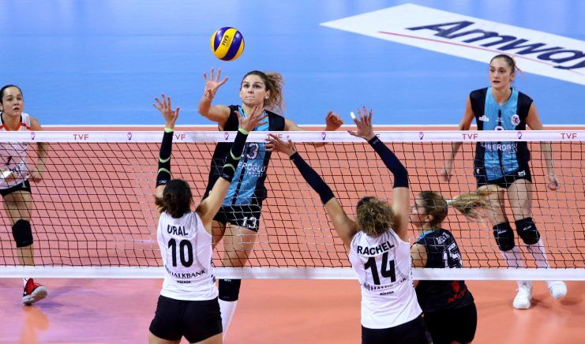

Fileye temas kuralları
Rakip sahaya gönderilen top filenin üzerinden, geçiş boşluğu içinden gitmelidir. Geçiş boşluğu file dikey düzleminin bir parçasıdır ve aşağıdakilerle sınırlıdır:
Aşağıda filenin üst kısmıyla,
Kenarlarda antenler ve antenlerin varsayılan uzantılarıyla,
Yukarıda tavanla.
Top; file dikey düzlemini, geçiş boşluğunun tamamen ya da kısmen dışından geçerek rakibin serbest bölgesine girdiğinde, takımın vuruş limiti dahilinde kalmak koşuluyla, geri oynanabilir. Ancak bu esnada
topu geri çeviren oyuncu:
Rakibin oyun alanına temas etmemelidir,
Topu file dikey düzleminin aynı tarafından yine tamamen ya da kısmen geçiş boşluğu dışından geçirerek geriye çevirmelidir.
Rakip takım böyle bir hareketi engelleyemez
File alt boşluğundan geçecek şekilde rakip oyun alanına doğru yönelen bir top, file düzlemini bütünüyle geçinceye kadar oyundadır.